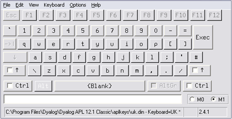
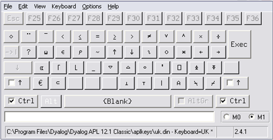
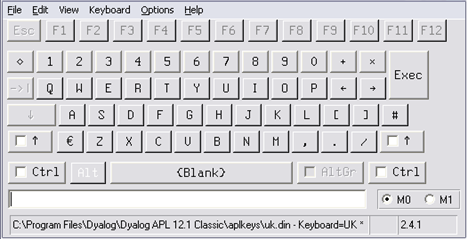
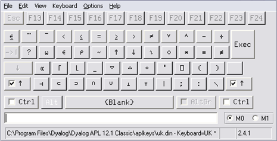

The standard Version 13.2 Classic Edition keyboard tables are files supplied in the aplkeys sub-directory named cc.din where cc is the standard 2-character country code, e.g. uk.din.
Note that the standard tables do not support the entry of APL underscored characters ⍙ⒶⒷⒸⒹⒺⒻⒼⒽⒾⒿⓀⓁⓂⓃⓄⓅⓆⓇⓈⓉⓊⓋⓌⓍⓎⓏ.
The standard table supports two modes of use; traditional (mode 0) and unified (mode 1). The keyboard starts in mode 1 and may be switched between modes by clicking the Uni/Apl field in the status bar or by keying * on the Numeric-Keypad.
The following picture illustrates the standard UK keyboard Unified layout.

APL symbols are entered using the Ctrl and Ctrl+Shift keys as illustrated below.

The following picture illustrates the standard UK keyboard Traditional layout.

APL symbols are entered using the Shift and Ctrl+Shift keys as illustrated below.


Classic Edition includes 12 single-line graphics characters for drawing lines and boxes. Line-drawing characters are entered using the keys on the numeric keypad in conjunction with the Ctrl key as shown below. Num Lock must be on.
| Normal | Ctrl | |||||
|---|---|---|---|---|---|---|
| 7 | 8 | 9 | ┌ | ┬ | ┐ | |
| 4 | 5 | 6 | ├ | ┼ | ┤ | |
| 1 | 2 | 3 | └ | ┴ | ┘ | |
| 0 | . | │ | ─ | |||
Note:to accommodate other characters, line-drawing symbols are located in the non-printable area of the font layout. Although these characters can normally be used in output to the session (function: DISP in the UTIL workspace uses them), many printer drivers and some display drivers will not display characters from these positions in the font.